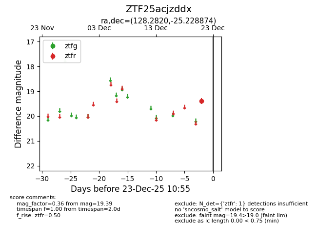
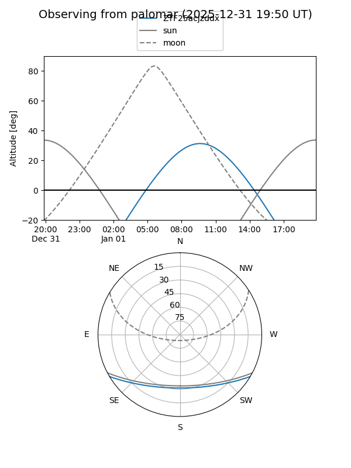

ZTF25acjzddx
Target ZTF25acjzddx at 2026-01-09 12:49
Aliases and brokers:
FINK: link
Lasair: link
ALeRCE: link
alt names
ZTF25acjzddx (ztf,fink_ztf)
Coordinates:
equatorial (ra, dec) = 128.2820,-25.22887
equatorial (HMS+DMS) = 08:33:07.69,-25:13:43.95
galactic (l, b) = (247.1884,+8.70013)
Flags:
Photometry:
last ztfr=19.39
1 ztfr detections
Lightcurve

Visibility


Additional plots